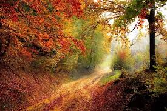
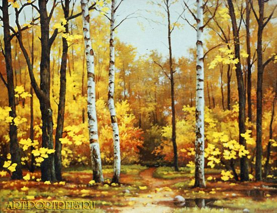

Насколько многогранна русская природа! Каждое время года неповторимо, красиво по-своему. Смена сезонов всегда приносила неизменное вдохновение и поэтам, и художникам. Они воспевали в своих работах журчание весенних ручьев, краски знойного лета, белоснежную зиму и, конечно, багряную осень.
Причем, они находят и открывают в ней такие стороны, которые нам, на первый взгляд, незаметны. Для творческого человека осень – это совсем не лужи и слякоть. Это деревья, меняющие свой наряд на разноцветные листья, это их шуршание под ногами и особый аромат уходящего лета.

Миниатюрный этюд мастера удивляет зрителей своей колоритностью и настроением. Если бы не две ярких осенних березы и лесок, виднеющийся вдали, то пейзаж вполне мог бы быть летним. Холодный голубой цвет крестьянских изб перекликается с осенним небом, наполняя работу ощущением сырости и прохлады.
Зелень еще яркая и не лишена свежести. Но главное настроение этюду придают золотые кроны деревьев. С одной стороны, они придают пейзажу теплоту и яркость, с другой стороны, ясно обозначают золотую осень с ее буйным красочным увяданием.